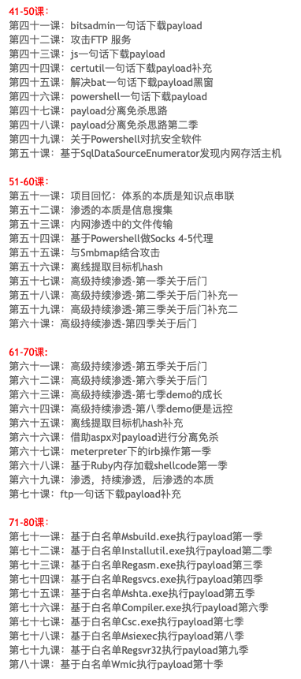
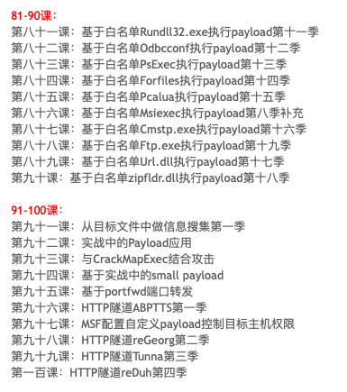
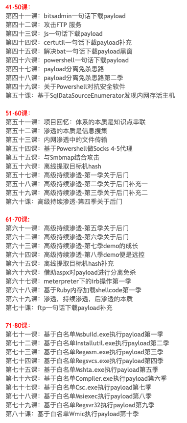
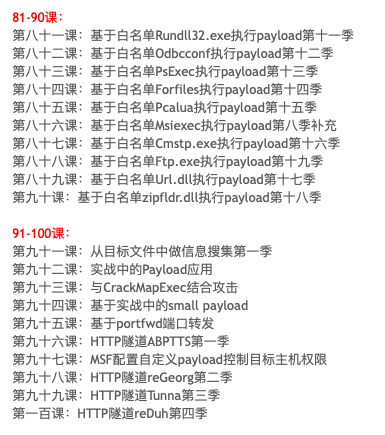

Micro8
渗透攻击超十年，由于年龄，身体原因，自己感觉快要退出一线渗透攻击了。遂打算把毕生所学用文字表写出来。因为文章涉及到敏感的攻击行为，所以好多需要打马赛克，或者是本地以demo的形式表现出来。当这个行业做久了，你也终有一天发现原来事物的本质是如此重要。比如内网渗透的本质是信息搜集。当年某大佬把这条经验传递给我，同样，今天变成老家伙的我，也希望把这条经验传递下去。
文中一定会出现笔误或者不对的地方，请大家多多包涵，提前向各位说声对不起，所有课程从基础开始（包括工具的介绍，应用等，由于是基础开始，部分内容可能会涉及初级知识点，请见谅），这样以后新来的同事或者想要自我从头学习的同事也可以避开一些弯路，在写的过程中，我深深体会到分享者才是学习中的最大受益者，由于需要成文章，所以需要查阅大量的资料。在整个过程中，又学习到很多知识点。连载其中包括穿插在工作中的项目心得笔记，包括但不限制于代码审计，web渗透，内网渗透，域渗透，隧道介绍，日志溯源与暴力溯源等。如果有课程指定需求介绍相关技术的同事（在我技术能力范围之内），请发我的邮箱：micropoor@gmail.com。在2010-2012年之间一直在写
如需指定技术诉求，请留言于下，方便在未来更新的课时中，加入。再次感谢所有读者。
 



渗透测试/APT模拟攻击，是一把双刃剑，Micro8系列适用于初中级安全从业人员，乙方安全测试，甲方安全自检，网络安全爱好者等，企业安全防护与提高，该系列遵守：免费，自由，共享，开源。请勿触犯法律，如触犯与本作者无关。当下载/传播/学习等便视为同意该条例。愿读者学有所成,问有所得,静有所思，而私有所惘。